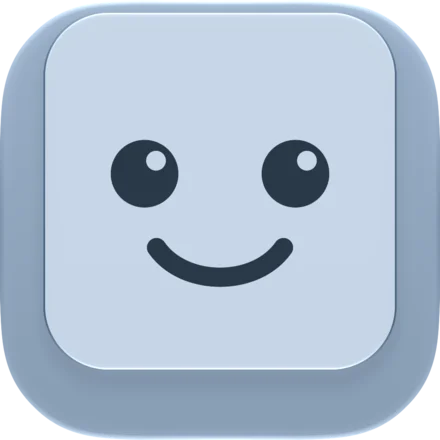
Eleven sounds for the keys you already have.
Board plays real keyboard and typewriter recordings as you type on your Mac.
Built for macOS 15 or later, Apple silicon. Tested on macOS 26 and 27. Works offline: no account, no server, no network.
Sound is off. Turn it on, then type.
Take a typing test.
Type the passage and hear every key. You get your words per minute and accuracy at the end.
Every key you press makes a small sound. Board picks the sound, and your fingers pick the rhythm.
Nothing you type here is saved or sent anywhere.
Practice in the app.
The test above runs on this page. Board has a Practice window of its own, for typing and for the keys games use. Your results stay on your Mac.
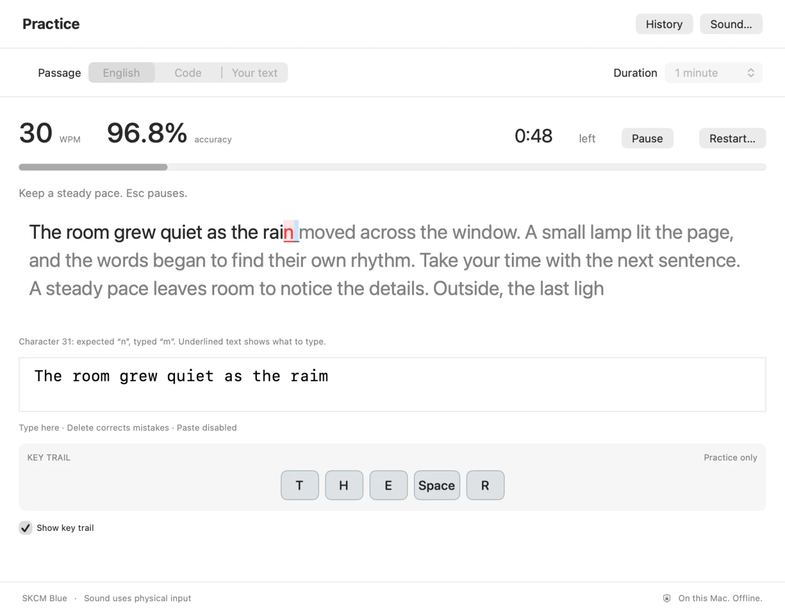
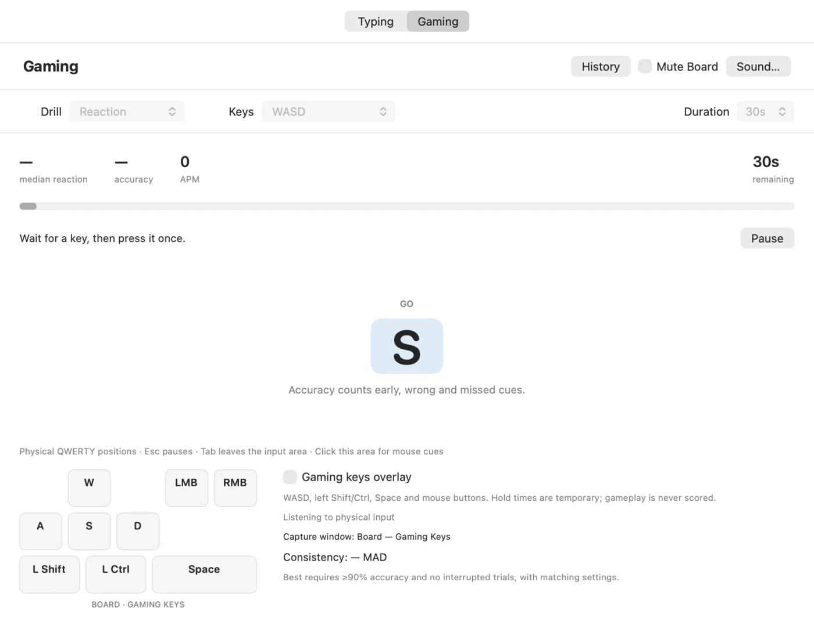
Typing
English, Swift, JavaScript or Python code, or your own text, for 30 seconds, 1 minute or 2 minutes. You get words per minute, accuracy, marked errors and a key trail. Board saves result summaries only, never what you typed.
Gaming drills
Reaction, Strafe rhythm, Key reversal and Hold + tap, for 30, 60 or 120 seconds. Timed drills run at 60 to 160 beats per minute (BPM) and say whether a press was early, late or missed. Reaction gives your median time, accuracy, consistency and actions per minute (APM).
Gaming keys overlay
A small floating window shows WASD, Shift, Ctrl, Space and the mouse buttons, with how long each is held. Clicks go through it. It's off until you turn it on.
Screenshots drawn off screen by Board's own code. Reaction times include the delays of your keyboard, Mac and display.
Soundscapes Coming to Board
Seven backgrounds coming to Board, from offices through the decades to a coffee shop, park and beach.
Not in Board yet. The places and their recordings are still being made.
Your agent does the work. You sound busy.
Turn on AI mode and Board types along while a coding agent works, so you hear a busy keyboard, and you hear it stop when the agent is done. Board gets the agent's status from Rex, the terminal your agents run in, so AI mode needs Rex. What you hear isn't the code your agent is writing: Board types real source files from a folder you choose. It only plays sounds and shows keys: nothing is ever typed into your apps.
A coding agent is workingBoard types along
No agent is workingBoard goes quiet
What Board typesReal source files, not your agent's code
SpeedHuman to Machine gun
Keys typed into your appsNone, ever
Liner notes
See your keys, too. Board has four visualizers, and the keyboard comes in ANSI, ISO and JIS layouts. Highlights take the color of each key's switch.
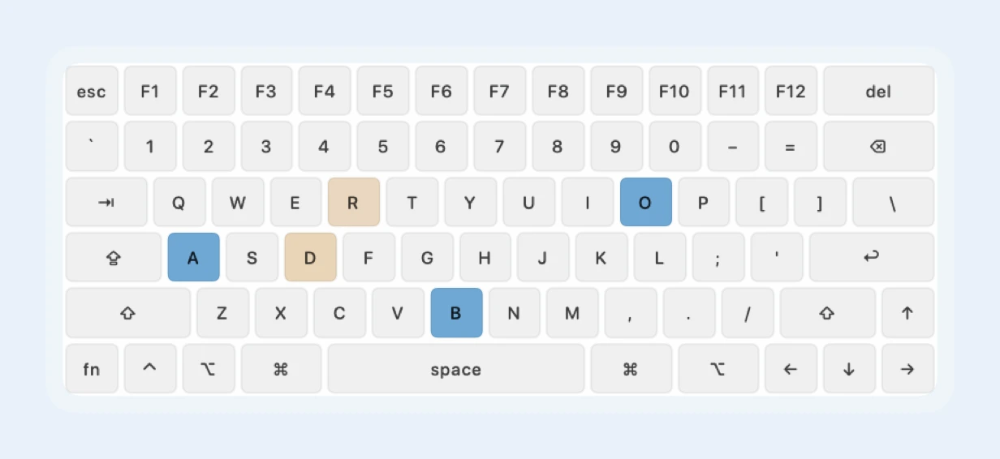
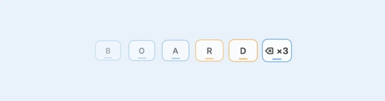
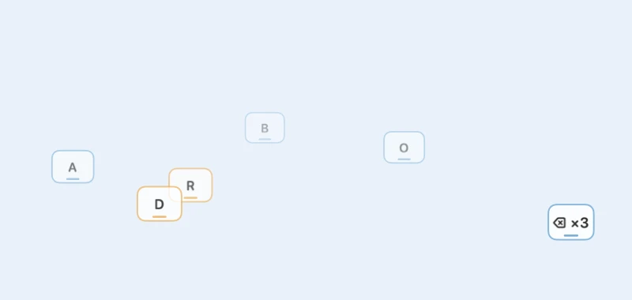
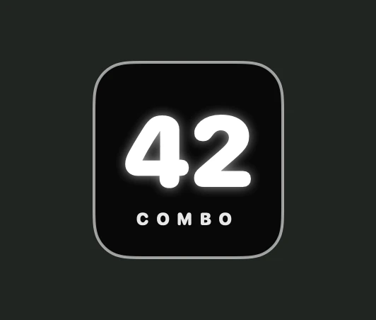
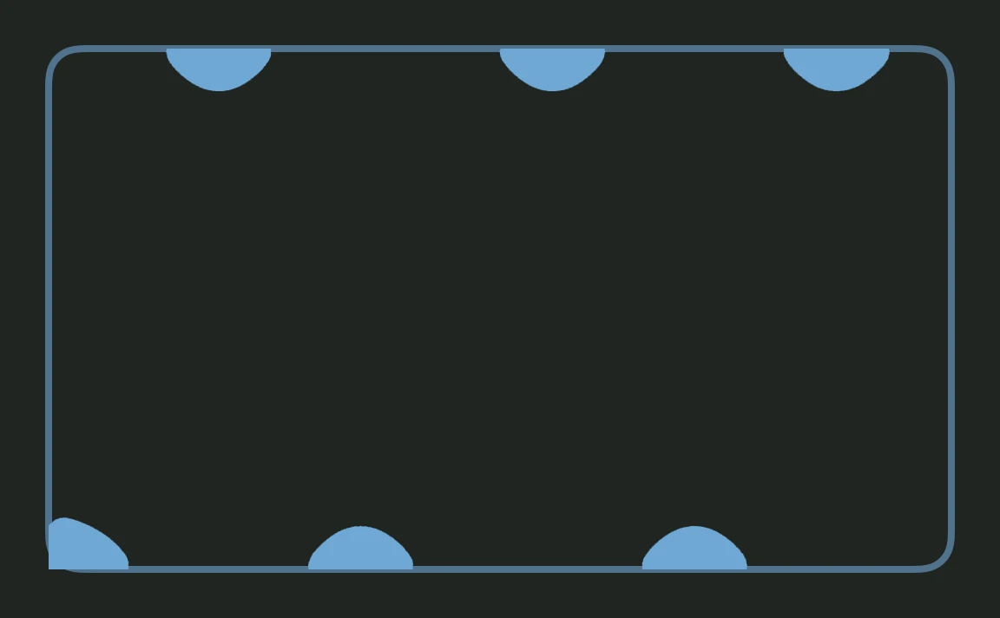
Keyboard, keystroke trail (in a row, and with Float), combo and bezel, drawn by Board's own code. The switch here is Alps SKCM Blue, with R and D set to Holy Panda.
Keystroke trail
Your last 15 keys, in a row or a column. Each one fades over 1.9 seconds, and quick taps of the same key merge into a count, such as ⌫ ×3.
Switch colors
Keyboard highlights and keystroke caps take the color of each key's switch, per-key sounds included. Bezel takes the selected switch's color. Released keys glow for 1.4 seconds.
Movement
Pop, Slide, Bounce and Pulse, plus Float for keystrokes. With Reduce Motion on, keys only fade.
Make it yours
Give single keys their own sound, or import your own recordings.
Five colors
Pick Board's icon color. The keyboard in Settings and Practice's key trail follow it.
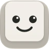
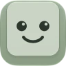
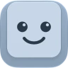
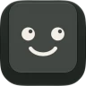
Stays on your Mac
No account, no server, no network. Board keeps no history of your keys.
Hear every key you press.
Built for macOS 15 or later, Apple silicon. Tested on macOS 26 and 27. No account, no server, no network.